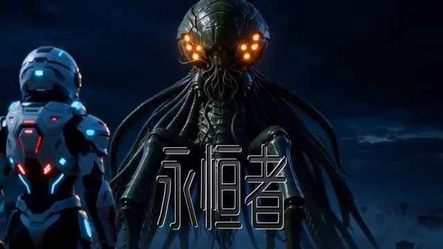
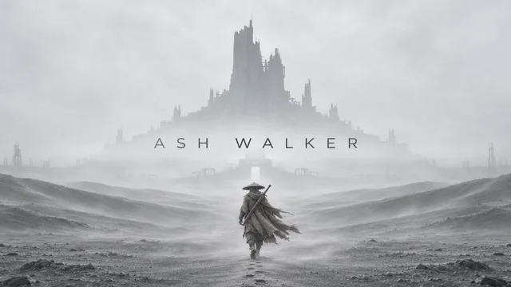

橘生梦厂 · AI 短片编选
好梦，正在上映。
121 部筛过的 AI 短片，每部都写清楚为什么值得看。
每周一份编辑榜单，前往原平台免费观看。
首批关注小红书抖音哔哩哔哩
上一周首发的新作 · 本周编选 · 每周一更新
-
ME2
首发 · 哔哩哔哩
把「雇一个自己」写成交易逐渐失控的短篇科幻。
-
十二游记
首发 · 哔哩哔哩
方言刻意听不懂、雾散即消失的渡口、一人两面的镇子——把志怪气质放进当代重庆的江雾里，世界观干净…
-

永恒者
首发 · 哔哩哔哩
一个星球级的黑暗降临与外来英雄，八分钟里把「永恒」这个概念拍成了一次对峙…
-
因果定论：矩阵边界线
首发 · 哔哩哔哩
一部把「训练者与被训练者」放进同一套因果里的 AI 动画剧集，第一集为试播。
-
凤姑
首发 · 哔哩哔哩补选
从一桩「丈夫替妻子坐月子」的旧俗起笔的国风志怪动画。
每周一更新，本期收录上一周（11.16—11.22）首发的 5 部作品，首推《THE HUNT》见页首，其余 4 部按首发日期排列，共 52 分 12 秒；末尾 1 部补选自片库，标「补选」，不是上一周首发的新作。
本周推荐之外，最近收录的九部。
最近收录
共 121 部 · 首页收录 9 部
已收录 121 部 · 正式评分陆续补充
奇幻 / 治愈11:43单部待评
恒娘
原创 AI 动画短片，作者画心月狐，2026-11-23 发布，时长 11:43。改编自蒲松龄《聊斋志异·恒娘》。原页简介：朱氏失宠，向狐仙恒娘求教「纵之、毁之、炫之」的算计，想压下偏房、重夺丈夫宠爱；本片改用轻喜剧的调子，让两个困在后院互相较劲的女子放下争夺，结尾朱氏递上休书、收回良田策马离开，宝带也收拾包袱回乡。原页标签含 AI 短片、AIGC、AI 剧情大片、原创动画。
把聊斋的「驭夫兵法」改成两个女子各自解套的轻喜剧。

免费精选原片封面科幻15:16单部待评
ASH WALKER
原创 AI 科幻短片，作者 Naseru，2026-11-23 发布，时长 15:16。原页自述这是作者的第一部 AIGC 作品。原页标签为废土、末世科幻、机器人、原创短片、科幻短片；除片名与这些标签外，原页未提供更多剧情说明。
科幻 / 悬疑08:48单部待评
无名变量
原页标为 AIGC 动漫，标签含 AI、AI 动画、AIGC、赛博朋克、科幻、机器人、赛璐璐风。原页简介只给了三句引子：公元 2038 年，她突破重重关卡进入能量塔，等待她的是什么；如果记忆可以写入、命运可以预判，此刻做出选择的究竟是谁。原片未提供更多剧情与人物设定。
赛璐璐画风的 AI 动画短片，围绕能量塔、记忆写入与预判展开。
奇幻 / 都市16:07单部待评
换运篇
狐小生99 的国风自制动画短片，原页标签含「AI动漫」「自制动漫」「国风动漫」，标题写明属作者「白九娘」系列中的《换运篇》。原页简介只有一句设问：老实本分的打工人，用良知与勤恳换取十年鸿运，如果是你，你愿意换吗。原页未提供更多剧情展开与分集信息，本站不作补写。
把良知和勤恳摆上桌面，换十年鸿运——国风 AI 自制动画里的一个设问。
奇幻 / 仙侠15:29单部待评
折寿篇
狐小生99 的国风自制动画，原页标签含「AI动画」「原创动画」「国风动画」，标题中的青丘阁与同作者的《白九娘之〈换运篇〉》同属一条线。原页简介：三百年前，清冷狐妖白九娘私救凡人，擅用狐族秘术，被断一尾、封印修为，罚在人间经营青丘阁。原页未提供更多剧情展开与集数信息，本站不作补写。
狐妖私救凡人，换来的是一尾与修为的代价——国风 AI 自制动画。
科幻 / 悬疑12:32单部待评
WANTED RELOADED
Aiworlddream 制作的英文科幻西部动作短片，原页标题与标签（AIFilm／CinematicAI／AIMovie）均标注为 AI 电影。据原页简介：Goggle 与 Long-Ear 两名逃犯各被悬赏一百万美元，一场致命追猎就此展开；他们平静的藏身处被恶名昭彰的亡命头目 Black Eye Kane 手下摧毁，两人被迫逃入荒漠，前往无法无天的小镇 Brine Hollow，在那里遇到神秘兜帽陌生人 The Watcher，得知一条通往仇敌的险路。但要抵达 Kane 的堡垒只是开始，致命防线、全副武装的外星守卫与机械执法者 Iron Marshal 挡在他们与自由之间。原页称全片为电影化 CGI 角色、爆炸动作、沙漠追逐与机器人敌人，并在结尾安排了一场决战。
太空西部与赏金追猎混搭的 AI 动作短片，荒漠、外星亡命徒与机械执法者依次登场。
科幻 / 悬疑12:58单部待评
假如你一觉醒来，变成一头极寒装甲泰坦蟒
远古-回响 的 AI 科幻短片，原页简介自述为「原创 AI 动物科幻剧情作品」，标签含 AI动画／AI短片／原创动画。原页以第二人称展开：假如你一觉醒来，变成一头体长 220 米、体重超过 4 万吨的极寒装甲泰坦蟒，能否在日本北海道活下来——那里没有温暖的巢穴，只有零下 50 度的冰川、疯狂的军事围剿，以及一座藏着恐怖秘密的地下实验基地。原页称当你被植入神经操控桩、连自己的身体都无法控制时，一个双目失明的小女孩成了你唯一的伙伴；随后日本海陆空三军全部出动，连核武器也被投入战场。原页结尾提问：如果拥有毁灭一切的力量，却唯独救不回最想保护的人，你还会选择成为怪物吗。
巨兽题材的第二人称 AI 科幻短片，冰川、军事围剿与地下实验基地层层推进。
奇幻 / 悬疑09:48单部待评
宝莲寺
狐小生99 的国风自制动画短片，原页标签含 AIGC／AI漫剧／原创动画，标题说明取自《醒世恒言》故事。原页简介只有一句引子：求子十求九男的寺庙红了整整三十年，人人都说送子观音灵验，妇人住上一晚，回家必生男孩，究竟是传说，还是另有隐情。原页未提供更多剧情展开与分集信息，本站不作补写。
聊斋式国风志怪的 AI 自制动画，一座送子灵验的寺庙藏着说不清的隐情。
科幻 / 悬疑14:07单部待评
The Last Outlaw
Aiworlddream 制作的英文科幻西部短片，原页标注为 AI 短片（标签 AIShortFilm）。据原页简介：故事发生在一个危险潜伏于每颗星球背后的无法无天的星系，一名赏金猎人接下了他迄今最凶险的一单；他穿过尘土飞扬的外星荒漠、被废弃的前哨站与冷酷的边境小镇，生存本身就要付出代价。当这场猎杀变成私人恩怨，猎人必须面对自己的过去，并决定为最终报酬能走到哪一步。原页称片中包含未来枪手、太空亡命徒、正面对决与电影化动作场面，并在结尾安排了一次反转。
科幻与西部混搭的 AI 短片，异星荒漠、赏金猎人与边境小镇对峙，适合看太空西部类型片的观众。
首页只放最近收录的九部，余下的作品都在完整片库里按题材、来源、评分筛选。
去完整片库搜索 / 筛选原片在作者发布的平台观看，可能需要登录原平台。
推荐一部好作品为一个好故事，买一张小票。
单片观影，支持创作
免费发现
现在就能看从公开作品里，找到想继续关注的创作者。
- 浏览作品介绍、榜单与站内评价
- 前往原平台观看免费原作
- 收藏喜欢的作品，留下观影感受
单片观影
拟定 3 元 / 5 元为一部经过审片的完整 AI 电影买单。
- 聚焦 40 分钟内的优质原创电影
- 购买后，在作品授权期内反复观看
- 每笔有效购买，为创作者记录收益
尚未开放真实购票；上面的按钮走演示商品与模拟支付，在本地服务生成演示订单，不扣款。
当前免费作品在原平台观看。未来购票解锁本站授权正片，购前展示价格、授权期和观看范围。我是创作者
已购影片与授权状态
我的影院
演示订单由本地服务记录（模拟支付，不扣款），换设备登录可恢复查询；授权放映未接入。以下状态覆盖「未登录 → 未购买 → 支付中 → 确认中 → 已购有效 → 退款／到期／下架」，不收任何费用，也不产生真实权益。
创作者发行
把你的 AI 电影，
放上橘生梦厂。
面向具备完整故事与视听完成度的原创 AI 电影。未来通过创作者工作台投稿、管理作品，并查看每笔有效订单产生的收益。
创作者工作台尚未开放；当前可通过邮箱交流作品合作。
交流作品合作你的作品，每一份支持都有记录。
投稿并确认授权
提交完整成片、试看、作品物料与授权资料。
审片通过后上架
核实故事、画面、声音和完成度，再确认价格与放映授权期。
按有效订单记录收益
每笔有效订单按约定比例计入创作者收益，退款与结算状态单独列明。
尚未开放创作者发布、收款或收益结算。分成比例与结算周期将在开放前明确。
热度帮助发现，质量决定收录。
每次推荐，都有理由。
关注热门，也给高质量的新作留位置。
粉丝多少，不是作品进入片库的门槛。
创意与表达
有明确的想法，让画面表达一件值得说的事。
画面与镜头
构图、光影、连续性与剪辑，共同服务于作品。
声音与完成度
按作品类型看声音、节奏与整体表达，不只看一张漂亮截图。
关于橘生梦厂
橘生梦厂做的是编选：从每天冒出来的 AI 电影与短片里，挑出值得看的，写清楚为什么。
片源都在原平台免费公开。这里只做介绍与索引，观看请前往原作页面。如果你是创作者，希望作品被收录或撤下，写信给我们。
关于作品与来源
版权归创作者与原平台所有。当前提供索引与介绍，不提供视频下载或转存；未来站内放映需取得相应作品授权。
封面取自作品在原平台发布的官方物料，仅用于识别与介绍，官方信息以原平台为准。来源与评分信息以实际核实情况为准。如你是权利人且不希望作品被收录，请发邮件至 highstrith@gmail.com，我们会在 48 小时内下架相关内容。